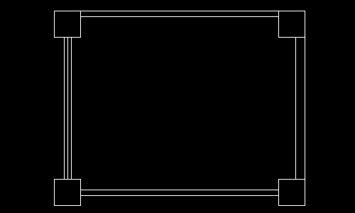
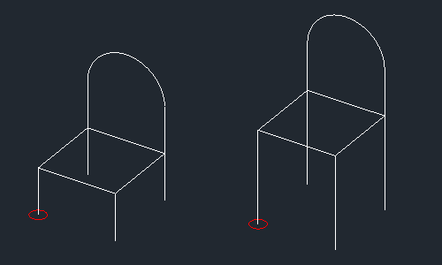
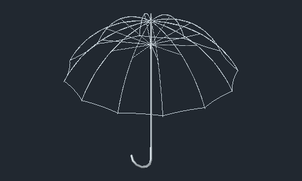

繪圖工具可以說是AutoCAD最基礎的指令，但卻是最重要的工具之一，所有複雜的圖面接由此繪圖工具，一步一腳印的繪製建構出來。
而開發此工具的初衷，就是為了補足新舊CAD版本的差異，也可有效節省繪圖步驟或順序～
現在用戶只要透過此「輔助繪圖」工具列，即可通用於AutoCAD所有版本，讓您的工作效率大大提升喔！
「輔助繪圖」工具列。
輔助繪圖工具說明：
https://www.autocad-tw.com/t14818-topic
※使用說明※
繪圖工具主要分為七種：
1.建立物件的鏡射複本，目前設定為：刪除來源=<是>或<否>。

2.使用預設選單，變更調整物件長度，也可以自行輸入長度。
3.從圖面中反刪除物件（保留選取），作用跟預設刪除指令剛好相反。
4.建立多條平行線，對正方式類型=<上方>、<中心>、<下方>。或建立平行線及中心線。

5.選取目標一物件及目標二物件，進行互換動作。多重物件可先將物件群組，然後再進行物件互換。

6.設定目前物件比例係數後，可更新選取物件之目前線型比例係數。

7.還可複選物件，隱藏未選取的物件。或關閉選取物件及打開所有隱藏物件。

影片展示▼
AutoCAD顧問外掛程式 輔助繪圖工具1
看完之後別忘投下您寶貴的一票，完成投票可以下載範例影片喔！
「投票」AutoCAD顧問 - ACADAdviser外掛程式（點我）